Publication figures of optical experiments, in your browser.
RNBeamX traces real beams through real optics, and has the device sketches that papers also need. Everything stays vector and editable, so you can export straight to PDF, SVG or PNG at journal size.
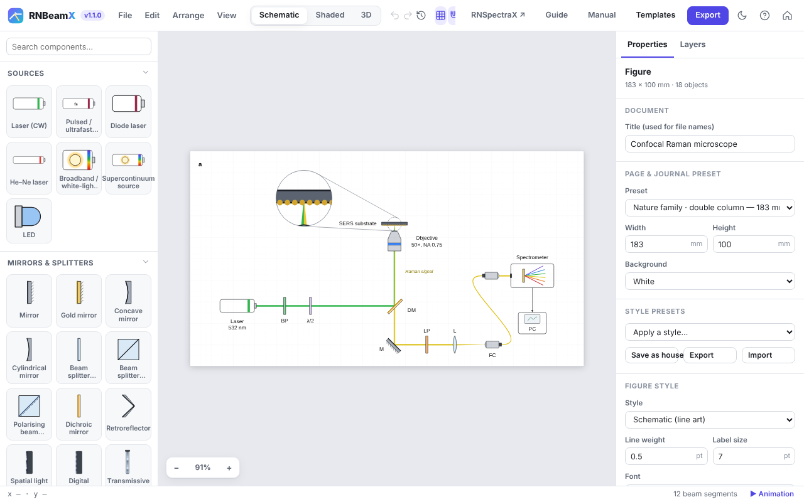
Quick start
A complete figure in five steps. Nothing is ever lost: every action can be undone with Ctrl+Z.
- Pick a pageChoose a journal preset under Page & journal preset, e.g. Nature double column (183 mm).
- Add a sourceClick Laser in the library. Its beam is traced at once.
- Drop optics on the beamDrag a mirror, lens or splitter onto the beam. It snaps on and turns to face the beam.
- Tune in the inspectorWavelength, focal length, reflectance, wave-plate angle… the beams update live.
- ExportPress Export, choose the width and format, and get a file ready to submit.
HeNe → Pol 0° → L1 f=50 → L2 f=200 → M → SLM → L3 f=200 → SF → L4 f=200 → CCD. Tags (L1, M2, BS1) become labels; lenses are spaced by their focal lengths along the beam (f₁ + f₂ between lenses, f to a pinhole, SLM or camera), so folds keep the spacing; a distance on its own (→ 150 mm →) fixes a gap. M folds the path (add up, down, left or right), and a new line such as BS1 down → M → PD follows a splitter’s reflected beam. Every part is placed on the traced beam, the figure scale is chosen so the setup fits the page, and anything it cannot do is listed under the preview.Building beam paths
Beams are traced, not drawn. Change any part and the light follows.
Snapping
Optics dropped on a beam snap onto it and turn to face it. Hold Alt to place freely. R rotates by 15°, F flips, O re-orients to the beam.
Physics
- Reflection, splitting, paraxial lenses
- Sellmeier dispersion in prisms, the grating equation
- Jones-calculus polarisation (λ/2, λ/4, PBS)
- Gaussian beams, Fresnel ghosts, interference
Off the table
Fold mirrors and periscopes send beams up or down, to an upright objective or another level. Shown correctly in 2D and 3D.
Readouts
Click a detector to see the power, wavelengths, polarisation, beam size and interference phase reaching it.
Building blocks: assemble a device part by part
The Nanostructures & films group holds separate parts that stack onto each other: substrate or film slabs, grating ridges, conformal coatings, nano-object arrays and 2D-material sheets, plus a layer key.
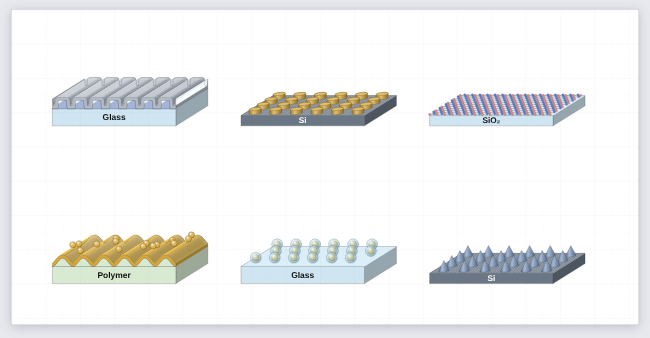
Stacking
Select a block and click another block in the library: it lands on top and takes the same width, depth and view. Or drag one block onto another. Drag a block away to detach it; the ones above it follow the block below.
Conformal coatings
A coating follows the surface under it, sidewalls included, so metal / dielectric / metal on grating ridges stays corrugated. Each coating adds its thickness along the surface normal.
Nano-objects and 2D sheets
Disks, pillars, blocks, cones, hemispheres, spheres, core–shell particles and rods, on square, hexagonal or random layouts. Graphene, hBN and MoS₂ sheets with real lattice geometry.
Shapes for everything else
The Shapes group has a 3D shape (box, upright or lying cylinder, tube, cone, pyramid, sphere, hemisphere, wedge), atoms and bonds for drawing molecules by hand, and a free polygon / path. Combine them into instruments, stages, lamps or analytes in your own colours.
Calculated too
Slabs and coatings carry a material and real thickness: the Optical response section of any block calculates the whole stack. Ridges, arrays and sheets are skipped, and the readout says so.
Device sketches and instrument parts
Many figures are more than an optical table. The Structures group and a few optical parts cover cross-sections, instruments drawn as boxes and measurement geometry.
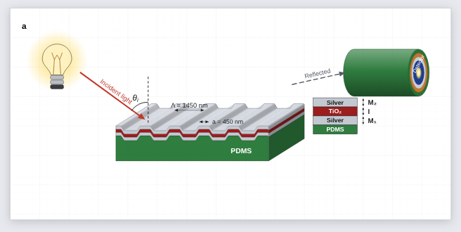
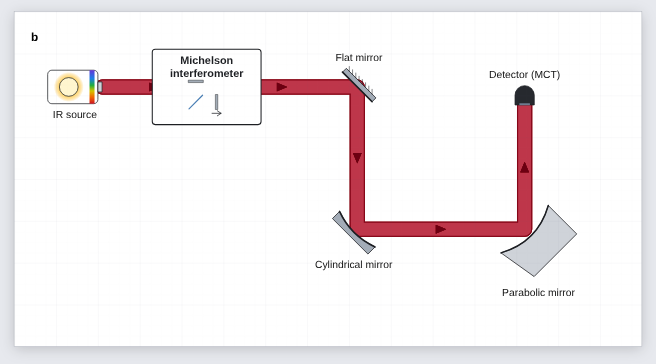
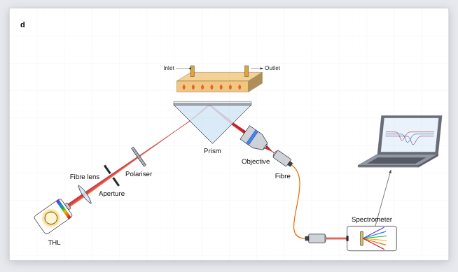
| Part | Where | Useful settings |
|---|---|---|
| 3D cylinder, 3D block | Structures | Coaxial face rings (e.g. an absorber-coated detector), slab substrates, chips. |
| Angle marker, dimension line | Annotations | θi arcs with a dashed normal; period or length lines (Λ, L…) with arrows or ticks. |
| Arrow with text | Graphical abstract | Fabrication steps (“Annealing 300 °C”), incident or reflected light. |
θ_i, θ_{obs}, TiO_2, x^{2+}, \lambda, *italic*, **bold**.Optomechanics and imaging parts
Mounts, tubes, cages, stages and imaging optics, drawn generically in the app's own style. They are real optics in the beam, not just pictures.
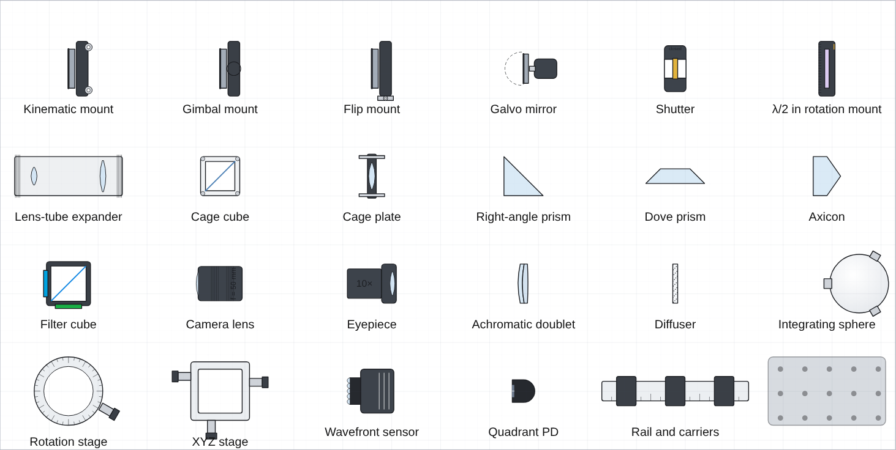
Mounts that steer
A kinematic mount's Fine tilt steers the beam by twice the angle; a galvo's scan angle can be keyframed; a flip mount flipped out lets the beam through.
Lens tubes and cages
A lens tube holds a lens, a filter or a beam expander (the beam leaves mag× wider, collimated). Cage cubes take a splitter, PBS, mirror or dichroic.
Epi-fluorescence
The filter cube sends excitation up to the objective and passes only the emission band down to the camera, so a microscope sketch traces correctly.
Prisms and the rest
Right-angle prisms turn the beam by total internal reflection; Dove, wedge and axicon shapes refract. Shutters block when closed; breadboards, rails and stages sit under the optics.
Lab-setup illustrations
Instruments, magnets and fibre-coupled sources for the "whole experiment" figure, all still traced where light is involved.
Fibre-output laser
A benchtop laser box: connect it with the Fibre tool to a Bare fibre end and the light leaves there, diverging, with the fibre drawn in the laser's colour.
Benchtop boxes and PC
Instrument ▸ Looks like: a 3D-look box with display, lights and knob (power supply, spectrometer, controller), or a monitor-and-tower computer.
Electromagnet and probe
Coils with pole pieces and optional field lines; put the sample at its centre. The fibre probe head shows its excitation and collection paths and focuses below its nose.
Cage systems and heating
Perspective cage plates with a lens, filter, iris or fibre adapter (a working fibre end), a 3D cage cube and rods, a hot plate with its sample, a laptop showing spectra, and smooth hanging cables.
Perspective look
Lenses and filters can be drawn as tilted discs, with block arrows and wide ribbon beams, for probe and filter-cube illustrations.
Ray diagrams, real lenses and microscope templates
Draw light as rays when the figure is about imaging. Switch a lens to Real glass surfaces and the rays are traced through its curved faces, so aberrations appear by themselves.
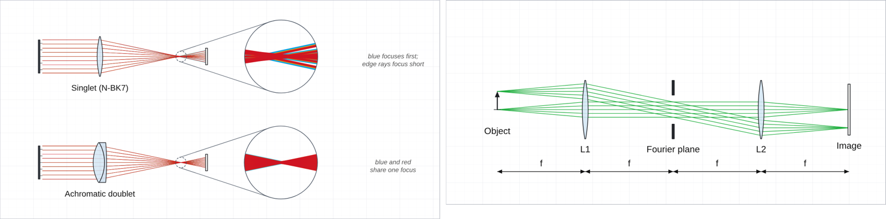
Ray bundle / object
An object arrow, a point source or a parallel bundle. One click picks F · d · C, RGB, one colour or black for print; the ray width slider sits beside them. Any laser can also be drawn as parallel rays (Draw as a ray bundle).
Real glass lenses
Spherical surfaces in N-BK7, flint, fused silica, CaF₂… designed for the focal length you set. Edge rays focus short; a singlet focuses blue about f/V before red; the doublet fixes it.
Focus and spot size
A lens shows its focal length (and, when real, its back focal distance). Move screen to focus puts the next screen or camera exactly there; the screen then reports the RMS ray spot per wavelength, Move to best focus finds the smallest spot, and Ray spot CSV downloads every ray's landing point.
Microscope templates
Epi-fluorescence, laser-scanning confocal with an animated galvo and a pinhole, light-sheet, 4f imaging with its Fourier plane, and the aberration demo above.
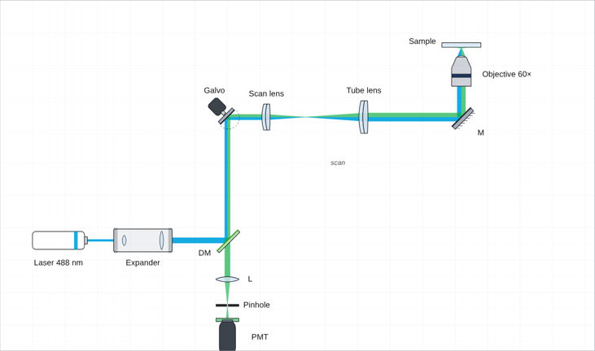
Calculated spectra: the sketch and its physics
Layer stacks and the SPR prism calculate their reflectance, transmittance and absorptance from measured optical constants. A linked data panel redraws the moment you change a layer.
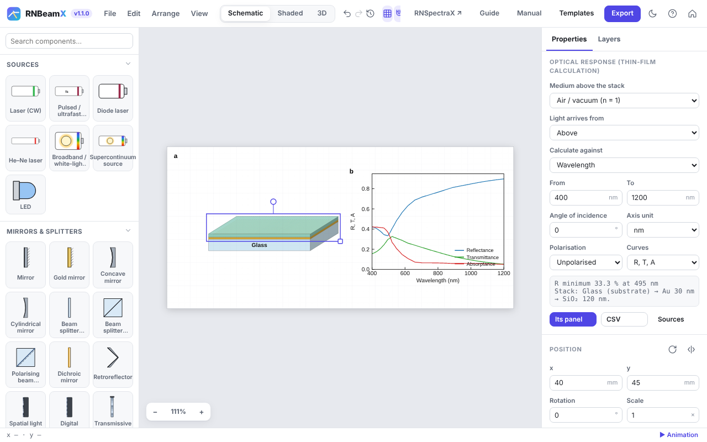
1 · Materials and thicknesses
Each layer's second line sets its material (Ag, Au, Al, TiO₂, SiO₂, Si, water, PDMS, glasses… or your own n, k) and its real thickness in nm. The drawn thickness only changes the picture.
2 · What to calculate
Under Optical response: against wavelength or angle, p, s or unpolarised light, and the curves (R, T, A). The readout gives the dip or peak position and width.
3 · Linked panel
Add data panel places a plot that follows the stack. Keyframe the analyte index or a thickness to animate a binding event. Unlink freezes the curves; CSV exports them.
Layer Studio
Studio in the top bar opens a full-screen designer for multilayers: MIM, MIMIM, Bragg mirrors with repeat groups, microcavities, Tamm structures. R, T, A, the field |E|² through the stack with the absorption in each film, and a wavelength × angle map update as you type. Insert puts it on your figure; Open in Layer Studio brings it back.
Fit a measured spectrum
In Layer Studio, load a measured R, T or A spectrum (file, paste or from RNSpectraX), tick the film thicknesses (and n, k, scale, offset) that may change, and press Fit: the values are found from several starting points, with standard errors, and written into the design (Ctrl+Z undoes it).
Ellipsometry, roughness and real substrates
Under Curves choose Ψ, Δ for spectroscopic ellipsometry (instrument convention). Each film can have a top-surface roughness (a 50 % void Bruggeman layer), and a film can be a mixture or porous material (Bruggeman, Maxwell Garnett or linear, any two materials). The substrate can have roughness and, for a thick substrate, its back-side reflection (incoherent). Load measured λ, Ψ, Δ and fit thicknesses, roughness and fractions.
Particle on a substrate or mirror
In Particles, choose Sphere on a substrate / mirror: a (coated) sphere a gap g above gold, silver, silicon, glass… — the nanoparticle-on-mirror (NPoM) gap plasmon, with its spectrum, the field in the gap, a near-field map and the gap sweep. Multipole image method with the dipole from Mie theory; checked against exact two-sphere theory.
Guided modes, birefringent films
Layer Studio finds the guided modes of a stack (TE and TM slab modes, surface plasmons, metal–insulator–metal gap plasmons): neff, propagation length, mode profile, prism-coupling angle and grating period, and neff against wavelength. A film can be birefringent or a liquid crystal (uniaxial, optic axis at any tilt and azimuth; exact 4 × 4 method), with the polarisation-converted transmission.
Colloid colour and size spread
In Particles a size spread averages the spectra over a Gaussian distribution, and Colour of the colloid shows the colour in a 1 cm cuvette (CIE 1931 under D65) and in dark field; add the cuvette to your figure in one click.
Pattern: gratings and metasurfaces
The Pattern tab of Layer Studio designs one unit cell: ridges, trapezoids, slanted lines, sinusoids, sawtooth (blazed) profiles, several patterned layers, repeat groups such as a grating on a (TiO₂ / SiO₂) × 6 mirror or a stack brought in from the Layers tab, coatings deposited from above, conformally or filling the gaps, or 2D arrays (disks, holes, rings, crosses). Drag the shapes; the rigorous grating calculation gives R, T, A, the near field |E|², the efficiency and angle of every diffraction order, and a wavelength × angle map.
Particles and SERS hot spots
The Particles tab calculates nanospheres, core–shell particles and dimers exactly (Mie theory, and multi-sphere Mie theory for the gap), and gold or silver nanorods with rounded ends, alone or as dimers end to end (gap hot spot, solved for the exact shape) or side by side: extinction, scattering and absorption, the near field |E|², the hot-spot field and the SERS enhancement |E(λ)|²·|E(λR)|² for a Raman shift, and the field against the gap size.
Part Builder
Studio ▸ Part: build a component of your own from rectangles, ellipses, polygons and lens profiles (added or cut away), plus flat, spherical and parabolic mirrors. Choose glass, opaque or mirror, coat single faces, add beam sources. A test beam shows how it works as you draw; insert it, keep it in My components, or share the file.
Labware & chemistry
Beakers, flasks, cuvettes, vials, tubes, burettes, pipettes, syringes, well plates and petri dishes, with liquids you set (level, colour, two phases, bubbles, particles, precipitate) and labels such as HAuCl₄. Connect them with fluid tubing. Line-art in Schematic, glassy in Shaded. Template: Gold nanoparticle synthesis → samples.
Diagrams & AI
Neural networks from layer sizes (3, 5, 5, 2), CNNs from a layer spec, a Transformer block diagram, and flowcharts: boxes of every common shape joined by connectors that stay attached and route themselves. Template: Spectra → CNN → classes.
Project planning
Gantt chart: type one task per line — Name | 0-6, | 40% for progress, ◆ Name | 12 for a milestone, # Phase for a heading — and arrows by task number (2>3); or give durations and predecessors and let it schedule. PERT / CPM network: ID | name | duration | after | who; boxes are placed for you, and earliest / latest start, slack and the critical path are calculated and highlighted. Task cards to place by hand with the Flow connector. Templates: Project timeline, Project network, Work plan.
Lab instruments
Oscilloscope, function generator, power supply, lock-in, DAQ, laptop and desktop (whose screen can show a data plot of your figure), hot plate, centrifuge, balance, pumps, gas cylinder, vacuum chamber, fume hood, glovebox and more, in 2D and as 3D bodies on the table. Template: Lock-in measurement.
Biology & safety signs
Brain (lobes coloured or one region highlighted), neuron, animal and plant cells, bacteria, viruses, DNA, antibody, protein ribbon, blood cells, the eye with light focused on the retina, a lab mouse and a human figure. Safety signs: GHS pictograms, warning triangles (laser, radiation, biohazard, high voltage …) and blue PPE signs, with an optional caption.
SPR sensing, live
Animate ▸ SPR sensing runs a binding event, calibration steps or an index sweep on the chip. The curve panel marks the dip as it moves, and a Sensorgram panel plots λres (or θres) against time, with the index n and the sensitivity S in nm/RIU. Export it as a video, or the sensorgram as CSV.
SPR in the beam path
With a chip on the prism, the traced beam is reflected with the calculated amplitudes, so the spectrometer readout shows the same dip. See the SPR sensor template (panel d).
Gratings, rigorously (RCWA)
Build a grating from blocks (substrate, Grating ridges, coatings) and the calculation switches to RCWA: one period with the real period, ridge height and coating thicknesses, every diffraction order included, TM handled with Li's inverse rule. It runs in the background; Check convergence tells you when enough orders are used.
Figure styles
One setup, several looks. Switch at the top of the window or with 1 2 3.
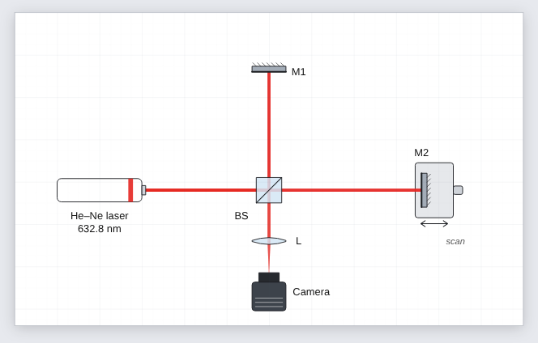
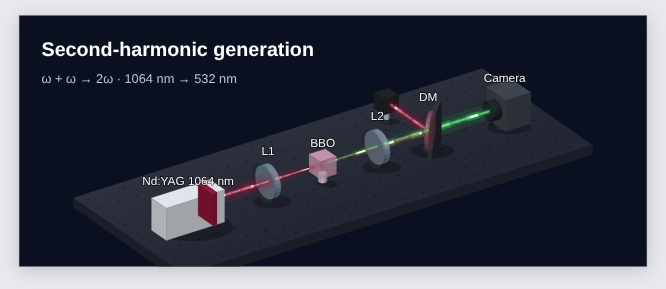
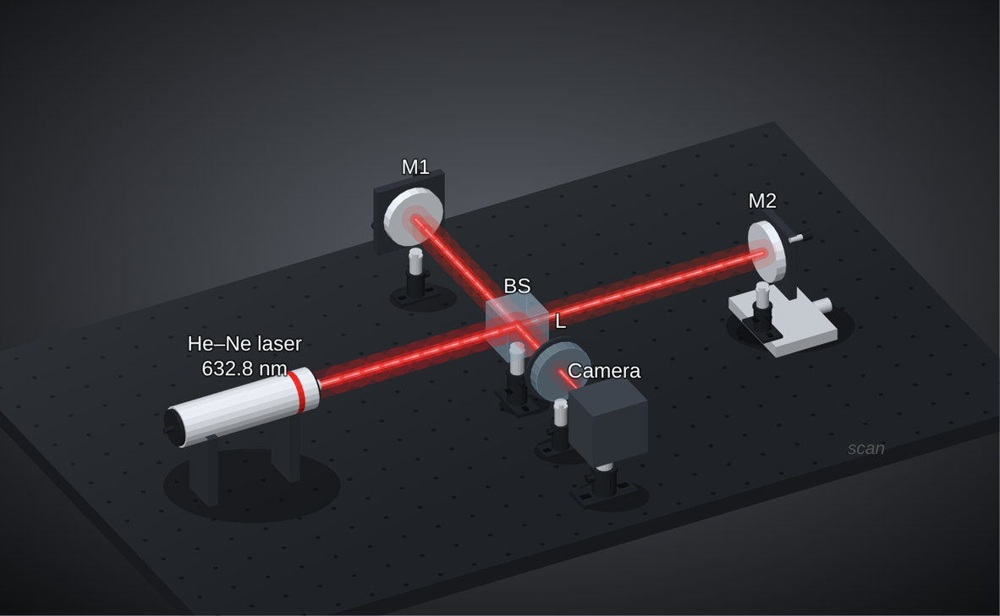
Learn optics
New to optics? Learn optics (the Learn button) explains every part (beam splitters, PBS, wave plates, lenses, gratings, AOMs, detectors …) and the basics (polarisation, Gaussian beams, interference, diffraction) with a live demo, the equations and typical numbers. Open any demo as a figure to play with it.
Colour any part
Select a part (or several) and pick a Body colour: housings and mounts change in 2D and 3D, glass and mirrors keep theirs. Ten anodised swatches, or any colour.
Posts and mounts
Mount style for the whole figure: post holder + post + slotted base, simple post, or pedestal. Per part, Post in 3D and Mount colour override it; any part can stand on a post.
Multi-panel figures and data
Data panels
File ▸ Add data panel places a vector plot next to the setup. Import CSV or TXT, or paste columns.
From RNSpectraX
In RNSpectraX press Export ▾ → RNBeamX. The processed spectrum arrives here as panel b.
Microscope image panels
Drop SEM, TEM, AFM or fluorescence images (or File ▸ Import microscope images as panels). Set the pixel size, or use Calibrate / crop… to measure the scale bar printed in the image and crop off the info bar. The scale bar is then always true to the printed size. Each panel also has a letter, a corner note, black and white points, gamma, colour maps with a colour bar, and a zoom inset.
Measure on images
Select an image panel and press Measure…: draw lines along nanorods (length) and across them (width), segmented lines for bent rods and wires, diameters, areas, angles and counts. Each class gets n, mean ± SD, median, range and CV, a histogram, and length / width gives the aspect ratio. Export the values as CSV, add the histogram or a summary to the figure; the measurements stay drawn on the panel. The scale bar (and a zoom inset’s region) can be dragged anywhere with its yellow handle.
Porosity
On an SEM image panel, Porosity… separates pores from the solid by a threshold (automatic, Otsu’s method, or set by hand; pores dark or bright; optional smoothing) in the cropped image or a rectangle you draw. It reports the porosity (pore area fraction), the number and density of pores and their size distribution (equivalent diameter, histogram), can colour the pores on the panel, and exports every pore as CSV.
Lay out figure panels
Arrange ▸ Lay out figure panels… puts images and plots in rows of equal height at a journal width (89, 120 or 183 mm and others) and letters them a, b, c. It can also give every image the same scale-bar length, or start an empty grid to drop images into.
Energy and band diagrams
Jablonski diagrams (with TADF and time scales), Rayleigh / Raman / IR / fluorescence levels, band diagrams (bulk, p–n junction with bias, Schottky contact with plasmonic hot electrons, quantum well, E–k, photocatalysis) and a level diagram written as text, e.g. level E2 1.43 ^{4}F_{3/2}, emit E2 E1 1064 nm. A wavelength in a label colours its arrow.
Nanomaterials
Detailed nanoparticles (sphere, rod, cube, star, prism, bipyramid, quantum dot) with shells, ligands (thiols, oleylamine, PEG, DNA, antibodies) and hot spots; a biosensor surface (SAM, dextran, Protein G, streptavidin–biotin, antibodies, antigens, BSA); crystal unit cells; carbon nanotubes; liposomes, micelles and bilayers; polymers and dendrimers.
Polarisation at a detector
Select a detector: besides the power it shows the polarisation state of the light reaching it — linear, circular or elliptical, the Stokes parameters, the degree of polarisation and a small polarisation ellipse — traced through wave plates, polarisers and mirrors. Convention (as in Born & Wolf): right circular is (1, −i)/√2 in the beam's (p, s) frame, turning clockwise as you look towards the source, with S₃ = +1 (north pole of the Poincaré sphere). Every reflection reverses the handedness, and a wave plate or polariser crossed backwards acts with its axis mirrored, so round trips (a quarter-wave plate and mirror, a Faraday isolator) come out as in the lab.
Command palette
Press Ctrl+K (⌘K on a Mac) and type: any menu command, any component to add, any template, a figure style or a Studio tab. ↑ ↓ to choose, Enter to run.
Versions
File ▸ Versions… keeps snapshots of your figure in this browser: name one before a big change, and an automatic one is kept every few minutes while you work (the last 20). Restore any of them in one click; Ctrl+Z goes back. Save the project file to keep a copy elsewhere.
Edit images
Select an imported picture and press Edit image…: remove a plain background (automatic, picked colour, magic wand, eraser and restore brushes, soft edges), trim, crop, rotate, straighten and mirror, adjust exposure, contrast, colour and sharpness or apply greyscale, sepia, duotone or a single colour, and set the size (e.g. 300 dpi at its printed width) and format (PNG, JPEG, WebP) with the file size shown. The original is kept, so you can edit again or revert. A cut-out casts a shadow of its own shape. For microscope data use the image panel instead.
Labels
Labels place themselves away from parts and beams. Shift+L re-arranges all of them, in 2D and in 3D.
Animation in one click
Press Animate (A): 20 ready-made animations, including a 3D rotation of the whole setup, pulse trains drawn as wave packets or Gaussian pulses, beam switch-on, build-up for talks, scans and wave-plate turns. By hand: open the timeline (T), and with ● Record on just change a part at a later time. Export MP4, WebM or an animated GIF.
Groups, your library and layout helpers
Group (Ctrl+G)
Parts move, rotate and scale as one; optics inside keep working. Ctrl+Shift+G ungroups.
My components
Save a group to the library and reuse it in any figure. Export file shares it with your group; File ▸ Import component file adds theirs.
Tidy setup (Shift+T)
Puts optics exactly on their beams, evens out nearly even spacing and re-places labels, without changing the optics.
Fit to a journal width
Rescales the figure to 89, 120, 183 mm (or any width) with type and line weights unchanged, and the physics identical.
While dragging, green guides show equal spacing with the neighbours in a row or column.
Export, sharing and submission
Show what it records: tick it on a camera, beam profiler, photodiode or screen and the part draws, beside itself, the light the tracer delivers there: spot positions, the 1/e² beam radius (Gaussian model) and interference fringes between beams from the same source and wavelength, from their real angles, path lengths and polarisations. Fringes finer than an image pixel average out, as on a real camera. Choose the side, size, field of view and colours; the caption gives the field and the beam radius or fringe period, and counts as lettering.
Lettering: for SVG, PDF, TIFF, PNG and JPEG choose With labels, Without labels (no component labels, free text or panel letters, for lettering in the journal font) or Both, which saves a labelled and an _unlabelled file. In the SVG all lettering sits in its own Labels layer in Inkscape and Illustrator. Gratings: set Order powers to sinusoidal, binary or blazed grooves and each order gets its scalar-theory efficiency at every wavelength, so weak orders are drawn faint (valid for periods of several wavelengths; use a Studio structure for RCWA).
Share link (File ▸ Copy share link): the whole figure in the address, nothing uploaded; a co-author opens it and edits a copy. PowerPoint: a slide with the figure as a vector picture; right-click ▸ Convert to Shape to edit it. TikZ: LaTeX drawing commands for theses and papers. PDF and SVG stay fully vector with real text; PNG and TIFF render at the dpi you choose. File ▸ Journal check lists what a figure editor will look at (font sizes, line weights, colour-blind safety, image resolution), and the Caption helper drafts a caption with every abbreviation defined.
Reset and undo
The ↺ Reset button next to undo and redo, also in File ▸ Reset everything and the touch toolbar, returns RNBeamX to its first state in one click: an empty default figure, default grid and snapping, and the timeline closed. The reset is a single undo step, so Ctrl+Z (or Undo in the notice that appears) brings your figure back.
Keyboard shortcuts
| Action | Keys | Action | Keys |
|---|---|---|---|
| Undo / redo | Ctrl+Z / Ctrl+Shift+Z | Rotate ±15° | R / Shift+R |
| Duplicate | Ctrl+D | Flip | F |
| Delete | Del | Orient to beam | O |
| Fit page | 0 | Styles | 1 2 3 |
| Grid / labels | G / L | Auto-arrange labels | Shift+L |
| Timeline / play | T / K | Keyframe | I |
| Save / export | Ctrl+S / Ctrl+E | Help | ? |
| Group / ungroup | Ctrl+G / Ctrl+Shift+G | Tidy setup | Shift+T |
How to cite
If RNBeamX helped with a figure, a graphical abstract or a calculated spectrum in your work, please cite it.
Naik, R., & Srivastava, S. K. (2026). RNBeamX (Optical Setup Designer) (Version 1.2) [Computer software]. Zenodo. https://doi.org/10.5281/zenodo.23697703